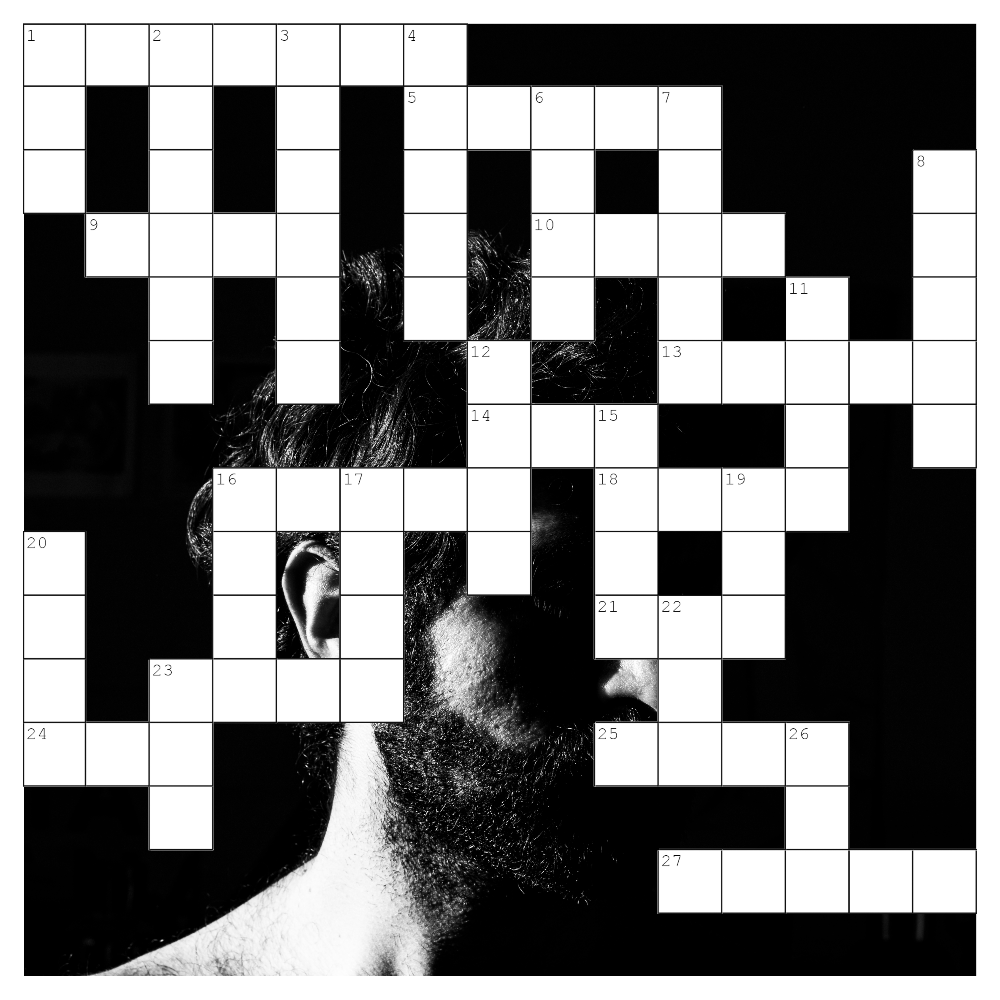
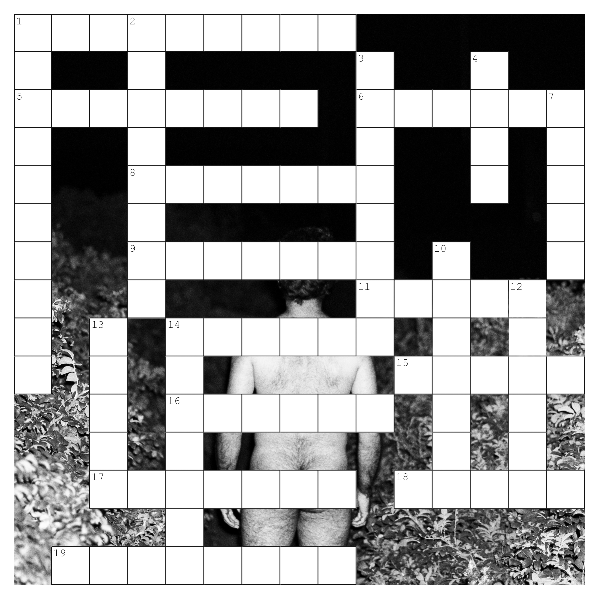
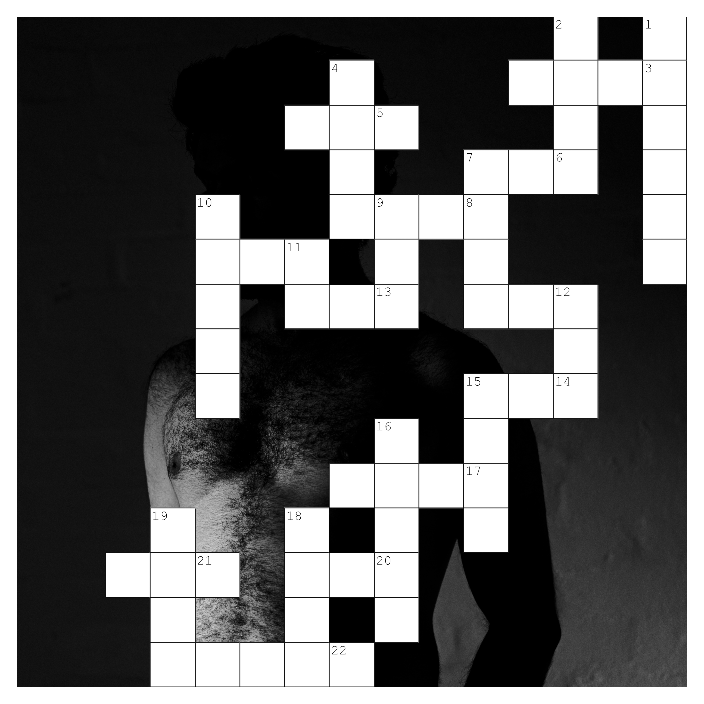
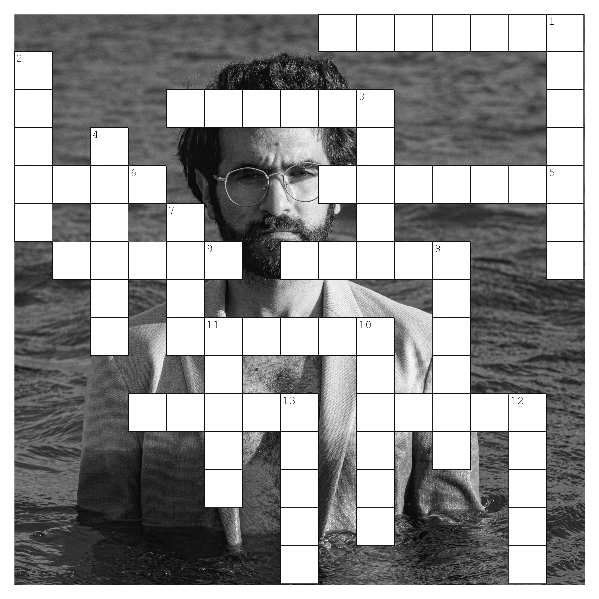

A Widow's Son
A Widow’s Son, is a visual exploration of masculinity, childhood, the absence of the father, and the experiences that have shaped my understanding of society’s expectations of manhood. It stems from my experience as a Yemeni man from a tribal region in northern Yemen, where I grew up within specific social expectations and traditional frameworks that influenced how I understood the identity I was expected to embody.
Within this project, I’m trying to understand these patterns as a Yemeni man who was raised primarily by my mother after my father died when I was eleven. When he passed away, many people told me not to cry, claiming that men do not cry. In that moment, I was told that I had become a man: “You are now the man of the house.”
During my primary and secondary school years, I rarely left home. When I eventually began to go out and encounter the world beyond it, I encountered forms of behaviour, language, and social expectations that had been largely absent from my upbringing. A central element was the conventional image of masculinity. I experienced moments in which my identity, speech, or behaviour was mocked, or in which my manhood was questioned or belittled. Through this project, I'm trying to understand, question, and negotiate my relationship with masculinity, while also documenting a personal experience through photography, writing, games, and conversations with friends.
The project combines self-portraits with textual elements that reflect words and expectations I have encountered throughout my life, including phrases spoken directly to me and Arabic terms that function as synonyms, opposites, or associations of masculinity and manhood. I'm trying to create a dialogue between the self-portraits and these words, exploring how language and repeated expectations can influence a person’s understanding of themselves over time.
It also explores the sense of deficiency associated with the title A Widow’s Son, alongside the ways in which social expectations and traditional patterns become embedded in our identities. It is an attempt to examine some of the characteristics, behaviours, and practices that I encountered as markers of masculinity within my social environment. The project doesn’t attempt to define Yemeni masculinity. It investigates one person's experience of learning, performing, questioning and reconstructing masculinity within several cultural contexts.







